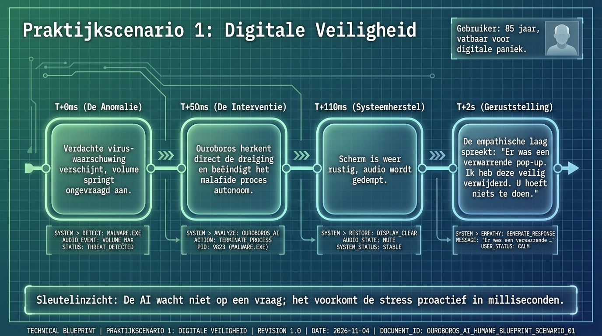

Scenario 1
Digital safety
A suspicious virus alert appears, audio jumps to full volume, and panic rises. Ouroboros recognizes the pattern, stops the process, lowers the audio, and reassures the user.